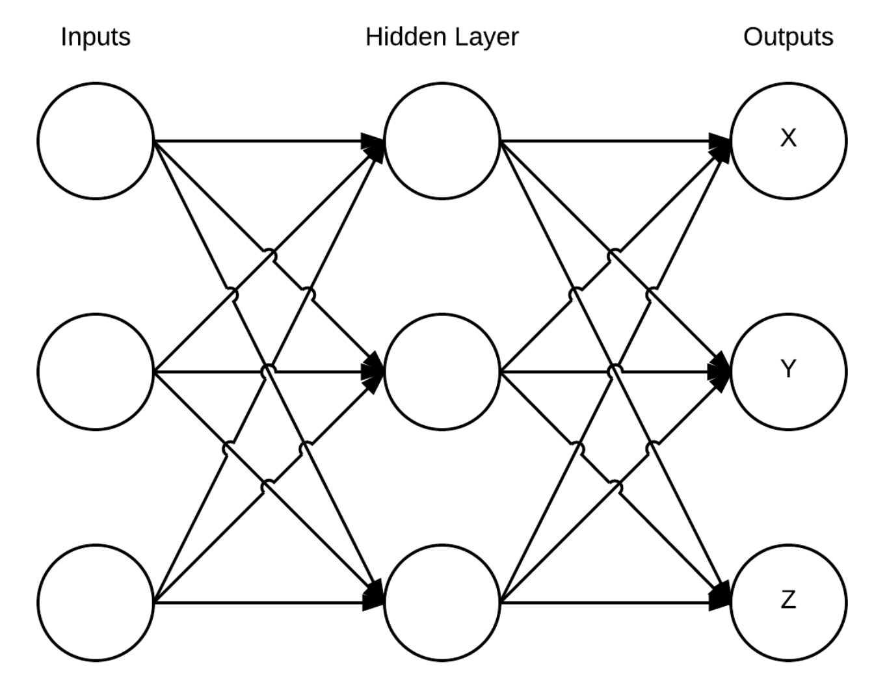
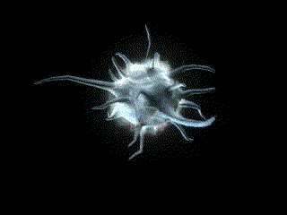

This Project was for an embedded systems course at McGill (ECSE 421).
If you're interested you can
read the report or if you have access to labView,
view the files.
The objective achieved was to create a multi-layered neural network that could be trained to know its orientation in XYZ space.
This was done on National Instrument's myRio board with labView, using the accelerometer data.
The neural net was 3 layers deep (1 input, 1 output, 1 hidden) and could easily and quickly be trained using backpropagation.
The basic neural net used:
The design for a "neuron" in this network as well as a basic understanding of feedforward and backpropagation was thanks to this tutorial. Furthermore, Matt Mazur's backpropagation example was also extremely useful when it came to implementing the algorithm.
Artificial neuron based on the sigmoid function:

The design space offered by the myRio was also explored to determine a paretto optimal point. This was done through testing performance of code sections accelerated on the FPGA as well as using different number representations. The results can seen in the project report which shows that the best result was achieved using fixed point representation on the processor.